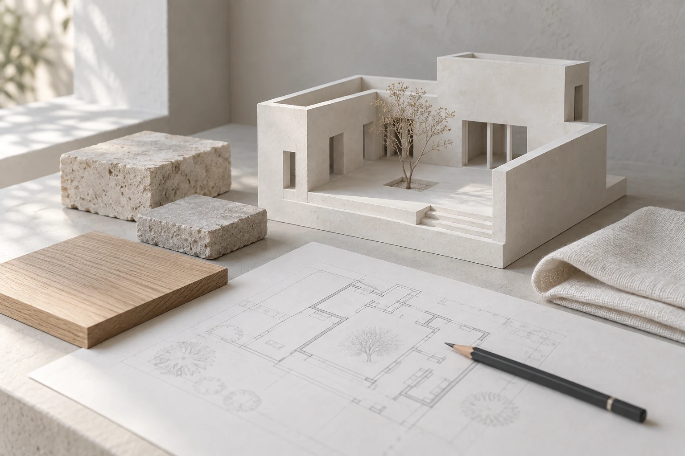

Homes with room
to slow down.
Architecture and interiors in Lisbon.
We work with what a place already has, and what you need it to become.
Project studies
A clear plan for
your next chapter.
From a first look at a property to the details you touch every day.
Residential renovation
Explore a new layout, better daylight and the parts worth keeping. The proposal brings the plan, materials and priorities together.
Interiors
Resolve storage, lighting, finishes and joinery as one space, with drawings and a material palette to discuss.
Feasibility studies
Compare layout options and constraints before a full design. Start with what is possible, what needs checking and where to focus.

From an idea
to a resolved place.
Start with the place
Bring your priorities, photographs and any existing plans. Define the brief before choosing a direction.
Compare the possibilities
Review layouts and materials together. Each choice should answer something in the brief.
Resolve the details
Bring the chosen direction into drawings and specifications. Agree the next scope before work moves forward.